Every module follows the same shape: the planning question the tool answers, what it does, the exact clicks or Processing parameters, the real output, how to interpret it, and what breaks.
Prepared 1362 design parcels (879 residential, 104 green, 379 other) from the cadastral master; 0 degenerate blocks dropped
yesil: 252 real zoning lots
hedef: 205 real zoning lots
Getting started
The Studio dock — the launcher
Where do I start, and what do I point at?
Parametric Process ships as a QGIS dock and a Processing provider. The dock is the launcher: it picks the parcel layer, starts the plugin's local web server and opens the 3D cockpit or the visual workflow modeler. Below it, the Processing Tools tree lists every algorithm — double-click runs it headlessly.
Step by step
Load your parcel / block layer into QGIS first. The dock only accepts polygon layers.
Open the dock from Plugins ▸ Parametric Process ▸ Parametric Process Studio.
Choose the parcel layer in the Parcel / Block Layer combo box.
Leave the local port at 8090 (or change it if something else holds the port — the dock falls back to a free one).
Press Launch 3D Cockpit for the generative view, or Workflow Modeler for the node canvas.
The Processing Tools tree below lists all seven algorithms; double-click any of them to run it against the current project.
The result
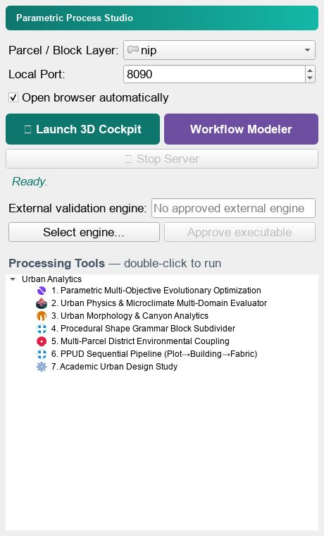
The Parametric Process Studio dock
Read the output. The dock is deliberately thin: it is a bridge to the web studio, not a second implementation. Everything you do in the cockpit can be synced back to QGIS with Sync Parameters, so the design work stays in GIS rather than in a browser tab you cannot query.
When it goes wrong
The cockpit opens with a demo city instead of your data — the server could not read the layer; check that the layer is loaded and polygon-typed.
The port is busy — the dock reports the fallback port in the status line; use that URL.
The engine path stays empty — an external validation engine is optional; it only matters for cross-checking against an outside model.
Getting started
Preparing a parcel layer for the engines
What do the engines actually read from my parcels?
The generative engines are not map renderers — they are design engines, and they read a fixed schema: floors, height_m, typology, usage, setback, roof_style, max_bcr, max_far and gfa. Your cadastral data rarely carries those names, so the first job is to translate it. This chapter does that with the real Tire master and shows the schema the engines see.
Step by step
Open the Tire planning master and select the cadastral master layer: 1 362 real ada with land use, dominant building type, average floors and area.
Read the land-use class into a design envelope. Residential density classes map to a BCR / FAR / height cap, and the dominant building type maps to one of the eight built-in typologies (Tower, Slab, Courtyard, LShape, UShape, PodiumTower, SteppedTower, MultiBuildingBlock).
Derive the storey count from the average floor count and convert it to height with the local storey height — 3.0 m in this data, 3.5 m for the 2.5D studio elsewhere.
Set the setback from the use class — 3.0 m for residential, 5.0 m for civic and commercial.
Write the four fields the engines read: floors, height_m, typology, usage, plus max_bcr, max_far and gfa.
Run Fix geometries first. A degenerate block cannot be subdivided and will abort a PPUD run with a confusing 'parcel_area must be greater than zero' error.
The result
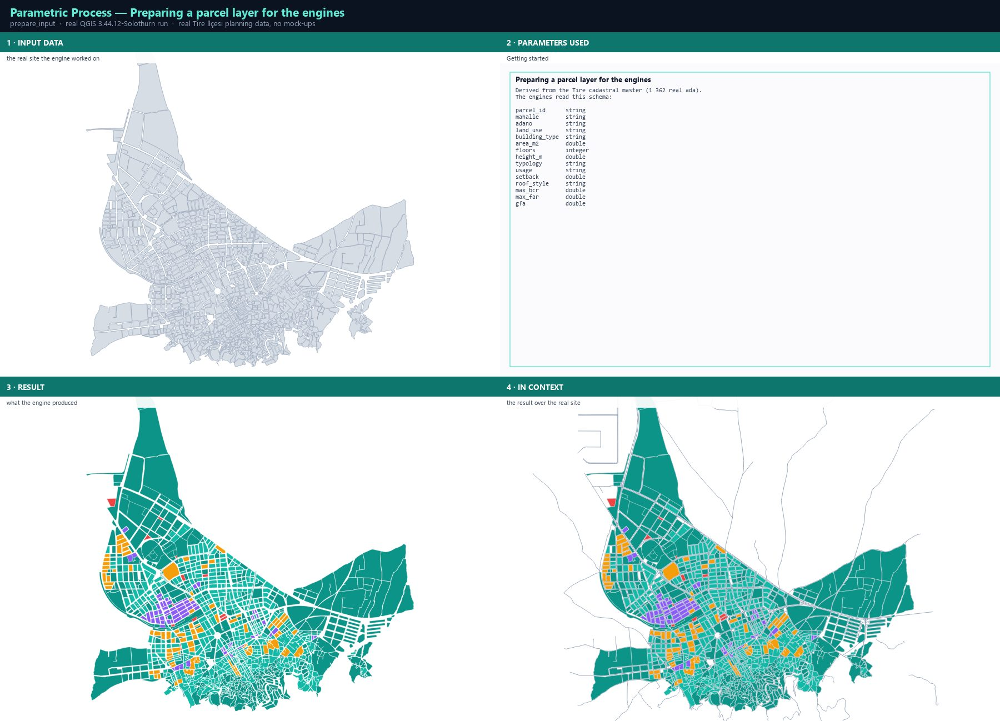
Preparing a parcel layer for the engines
Read the output. The typology column in the screenshot is the single most consequential field: it decides the footprint ratio, the courtyard share and the height modifier of every candidate the solver proposes. Get the typology wrong and the optimiser is answering a different question than you think.
Exact run used for the screenshots
Derived from the Tire cadastral master (1 362 real ada).
The engines read this schema:
parcel_id string
mahalle string
adano string
land_use string
building_type string
area_m2 double
floors integer
height_m double
typology string
usage string
setback double
roof_style string
max_bcr double
max_far double
gfa double
When it goes wrong
The run aborts with 'parcel_area must be a finite value greater than zero' — a multi-part block whose first part encloses no area; fix the geometry or take the largest part.
Every design comes out identical — the layer has no floors/height field, so the genes have no range; check the schema.
The results look implausible for the site — the BCR/FAR caps came from the wrong density class; the mapping table is in this chapter.
Evolutionary Engine
Parametric multi-objective optimization
Can an evolutionary search find a design set that is dense, comfortable and legal at the same time?
The core engine proposes candidate massing for every parcel and evolves them against several objectives at once under hard zoning constraints. It is not a greedy optimiser: NSGA-II keeps a non-dominated archive, so the output is a set of trade-off designs rather than one answer.
Step by step
Open Processing Toolbox ▸ Parametric Process Studio ▸ 1. Parametric Multi-Objective Evolutionary Optimization.
Set INPUT to the prepared parcel layer, POP_SIZE to 40 and GENERATIONS to 12.
ALGORITHM: NSGA-II for the fast default, SPEA-2 for fine-grained strength-based ranking, NSGA-III for reference-point niching on many objectives, MOEA/D for range-normalised decomposition.
Set the hard constraint envelope: MAX_BCR 0.45, MAX_FAR 2.5, MAX_HEIGHT 18.0 (metres). Infeasible candidates are penalised by the exact violation magnitude, not merely rejected.
Set SEED to 42 for a reproducible run — the same seed and the same input give the same designs.
Run. The output carries far, bcr, gfa, floors, height_m, typology, plan_score, pop_est, carbon, runoff, utci_score, svf_ratio, canyon_hw, pareto_rank and more.
The result
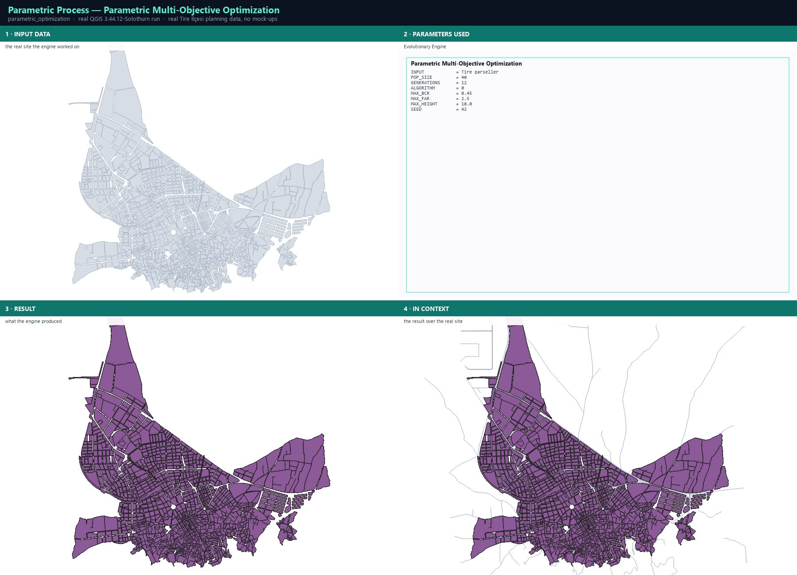
Parametric Multi-Objective Optimization
Read the output. Read the output as a set, not a single result: the archive holds every non-dominated design, so the spread of far and plan_score across the layer is the trade-off surface. A run where every parcel has the same far means the constraint envelope was the only active bound — widen max_far or lower max_bcr to let the search breathe.
The run is rejected — the input CRS is geographic; area would be measured in degrees, so reproject to a metric CRS first.
Everything is infeasible — max_bcr/max_far are below what the existing fabric already does; raise them to the planning norms and let the penalty guide the search.
The same input gives different results — the SEED changed; set it explicitly and record it in the report.
Which evolutionary algorithm should I actually use?
All four solvers were run on the same 1 362 Tire blocks, the same seed and the same budget. The interesting difference is not the map — it is the shape of the solution set each algorithm returns, measured on the metrics the engines actually write.
Step by step
Run the same job four times with ALGORITHM set to 0, 1, 2 and 3, keeping POP_SIZE, GENERATIONS and SEED identical.
Compare the output layers on the metrics that matter: mean plan_score, mean pop_est, mean carbon, mean utci_score and mean canyon H/W.
Watch the design count: MOEA/D returns fewer designs because its decomposition-based niching prunes duplicates more aggressively.
Watch the canyon H/W: values around 1.0 mean the street canyons stay in the comfortable range; 1.4+ is a wind problem.
The result
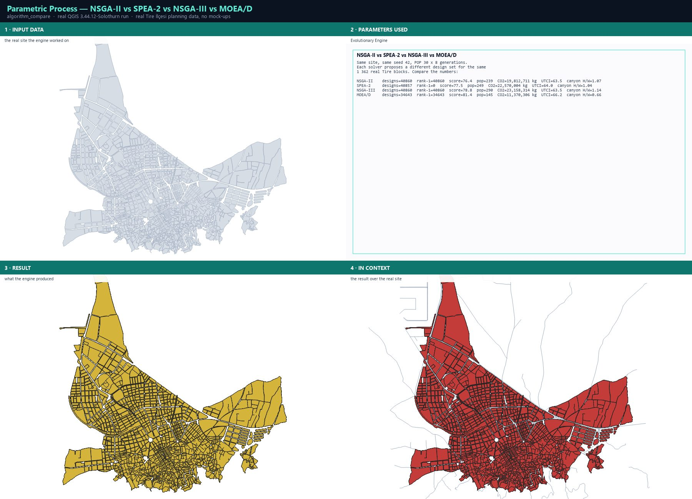
NSGA-II vs SPEA-2 vs NSGA-III vs MOEA/D
Read the output. There is no universally best solver — there is a trade-off. MOEA/D found the highest-scoring, lowest-carbon and most open designs, but with far fewer candidate designs and much lower population density. NSGA-III returned the highest population at the cost of the tightest canyons. SPEA-2 sits between them. Choose the algorithm by which of those two axes your plan actually cares about.
Parameters
Parameter
Description
Type
Default
INPUT
Input Polygon Layer
Input layer
—
POP_SIZE
Population Size
Number
30
GENERATIONS
Generations
Number
15
ALGORITHM
Algorithm
NSGA-II · SPEA-2 · NSGA-III · MOEA/D
Enumeration
NSGA-II
MAX_BCR
Max BCR (ratio)
Number
0.45
MAX_FAR
Max FAR
Number
2.5
MAX_HEIGHT
Max Height (m)
Number
18.0
SEED
Random seed (reproducibility)
Number
42
OUTPUT
Pareto Front Output
Output layer
—
Exact run used for the screenshots
Same site, same seed 42, POP 30 x 8 generations.
Each solver proposes a different design set for the same
1 362 real Tire blocks. Compare the numbers:
NSGA-II designs=40860 rank-1=40860 score=76.4 pop=239 CO2=19,812,711 kg UTCI=63.5 canyon H/W=1.07
SPEA-2 designs=40857 rank-1=0 score=77.5 pop=249 CO2=22,570,004 kg UTCI=64.0 canyon H/W=1.04
NSGA-III designs=40860 rank-1=40860 score=78.8 pop=290 CO2=23,158,314 kg UTCI=63.5 canyon H/W=1.14
MOEA/D designs=34643 rank-1=34643 score=81.4 pop=145 CO2=11,370,306 kg UTCI=66.2 canyon H/W=0.66
When it goes wrong
The four outputs look identical on the map — they are the same parcels with different attribute values; compare the numbers, not the colours.
A solver returns far fewer designs — decomposition-based niching removes near-duplicates; raise POP_SIZE to compensate.
Results change between runs — the seed is not fixed.
What does a design do to the street — wind, sun, heat and runoff?
The physics engine scores a design across fifteen microclimate and financial domains: wind ventilation and pedestrian comfort, solar access, air dispersion, sky view factor, sol-air temperature, runoff, carbon, plus the financial side (NPV, IRR, payback). These are transparent screening models with published thresholds, not CFD — the point is comparison between options, not certification.
Step by step
Open Processing Toolbox ▸ Parametric Process Studio ▸ 2. Urban Physics & Microclimate Multi-Domain Evaluator and set INPUT to your design layer (a solver output or a measured design).
Run. Every feature is scored and the metrics are written back onto the same geometry.
Read carbon, wind_score, solar_kwh, utci_score, runoff, svf_ratio, canyon_hw, npv, irr and the rest in the attribute table.
Compare the design with the existing fabric: run the evaluator on the current condition layer first, then on the proposal, and diff the two.
The result
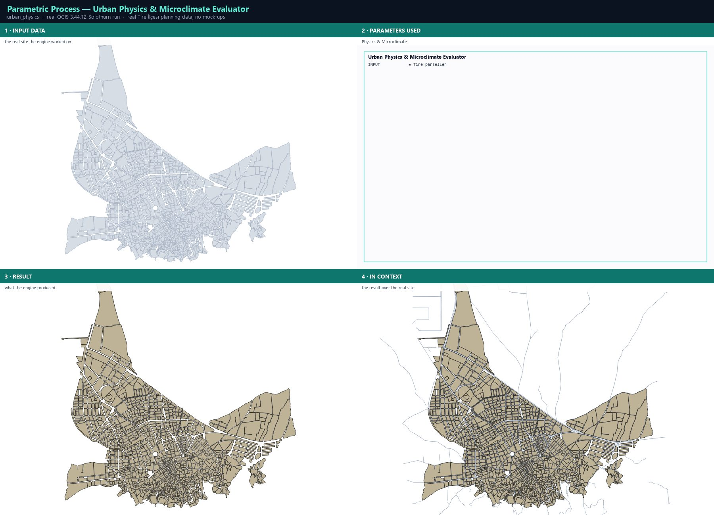
Urban Physics & Microclimate Evaluator
Read the output. The two numbers that most often decide a plan are canyon H/W and UTCI score. H/W around 1.0–1.5 is the comfortable street-canyon range; above 1.5 the street traps wind and loses sun, and both the wind score and the UTCI score fall together. Read them as a pair, never alone.
Parameters
Parameter
Description
Type
Default
INPUT
Input Building Footprints
Input layer
—
OUTPUT
Enriched Evaluated Layers
Output layer
—
Exact run used for the screenshots
INPUT = Tire parseller
When it goes wrong
Every score is identical — the layer carries no height or floors, so the physics models have no geometry to work with.
The values look extreme — a screening model assumes a uniform street profile; treat the numbers as comparative, not absolute.
Solar access is implausibly high — the model needs a latitude and an orientation it read from the layer CRS; check the CRS is geographic-or-local as expected.
What shape is the existing urban fabric, and what does that shape do to the street?
The morphology engine measures the block itself: footprint coverage, the share of the block given to open space, the street-wall height-to-width ratio, the orientation of the long axis against the sun, and the resulting canyon geometry. It is the diagnostic that tells you *why* a street feels the way it does.
Step by step
Open Processing Toolbox ▸ Parametric Process Studio ▸ 3. Urban Morphology & Canyon Analytics and set INPUT to the parcel or design layer.
Run. The engine adds the morphology fields to the same layer.
Read the canyon ratio and the orientation fields together: a long axis running east–west in a northern-hemisphere city means the sun never reaches the lower floors.
Use the open-space share to identify the blocks that could absorb more density without losing their courtyards.
The result
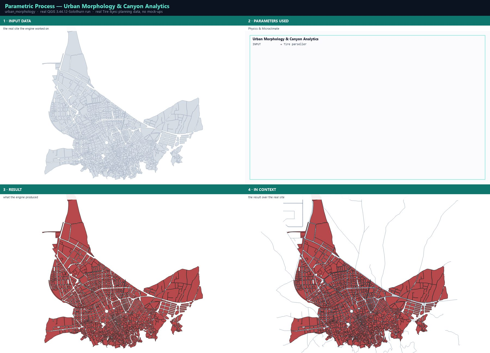
Urban Morphology & Canyon Analytics
Read the output. Orientation is the field people forget. Two blocks with identical coverage and identical canyon ratio can behave completely differently if one presents its long face north and the other east. A block that presents its long face to the sun is deep enough to keep daylight in the lower floors; the same block rotated ninety degrees is not.
Parameters
Parameter
Description
Type
Default
INPUT
Input Polygon Layer
Input layer
—
OUTPUT
Output Morphology Layer
Output layer
—
Exact run used for the screenshots
INPUT = Tire parseller
When it goes wrong
The canyon ratio comes out absurd for very small blocks — the ratio needs enough width to be meaningful; filter tiny parcels first.
Orientation looks random — the engine works on the long axis of the footprint; for L-shaped or crescent parcels that is only an approximation.
The values differ from a manual measurement — the engine measures the footprint, not the building envelope; a setback moves the number.
How do I split one irregular block into buildable plots?
The shape grammar turns a single block outline into a set of buildable plots using a rewrite rule set: the block is recursively split along its longest edge, and each fragment is re-evaluated against a target frontage. It is the geometric primitive every generative workflow starts from.
Step by step
Open Processing Toolbox ▸ Parametric Process Studio ▸ 4. Procedural Shape Grammar Block Subdivider.
Set INPUT to the block polygon layer and FRONTAGE to the target plot frontage in metres — 18.0 m suits a typical Turkish residential row.
Run. Each block is replaced by its subdivided plots, carrying the rule trace.
Feed the result into the PPUD pipeline or the parametric optimiser: the plots are the design units the engines reason about.
The result
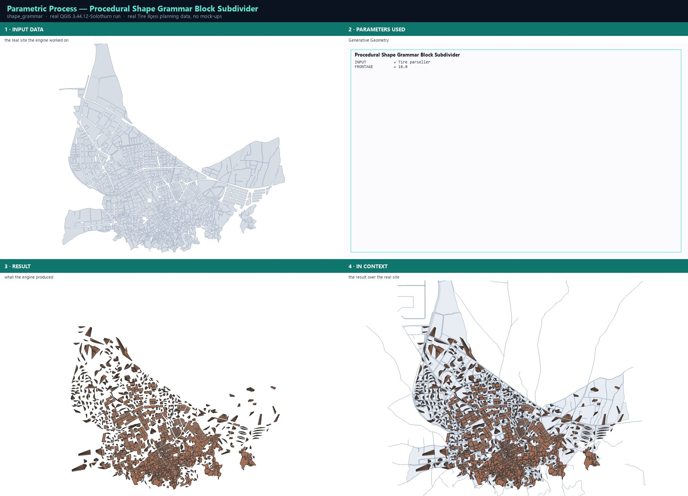
Procedural Shape Grammar Block Subdivider
Read the output. The frontage is the planning variable, not a technical one. Change it and you change the grain of the city: 12 m frontages give small row houses and a dense street wall, 25 m gives wider plots and more parking. Set it from the local housing type, not from the default.
Parameters
Parameter
Description
Type
Default
INPUT
Input Block Layer
Input layer
—
FRONTAGE
Target Frontage Width (m)
Number
18.0
OUTPUT
Subdivided Sub-Lots Layer
Output layer
—
Exact run used for the screenshots
INPUT = Tire parseller
FRONTAGE = 18.0
When it goes wrong
A block produces a single plot — the block was too small for the frontage, or its outline is degenerate.
The plots do not tile the block — the longest-edge rule cannot handle very concave outlines; simplify the geometry first.
The plots have no access to the street — frontage-based subdivision assumes each plot touches the perimeter; blocks with a closed courtyard need the perimeter strategy instead.
What happens when the design of one block changes the performance of its neighbours?
District coupling evaluates a set of parcels together instead of one at a time: a block's massing changes the wind corridor, the shading and the carbon balance of the blocks around it. This is the module that turns an isolated block study into a neighbourhood study.
Step by step
Open Processing Toolbox ▸ Parametric Process Studio ▸ 5. Multi-Parcel District Environmental Coupling.
Set INPUT to the parcel layer of the district you want to evaluate as one system.
Run. The engine couples the parcels and writes the district-level environmental results onto the layer.
Compare the coupled result with the same parcels evaluated individually — the difference is the interference effect.
The result
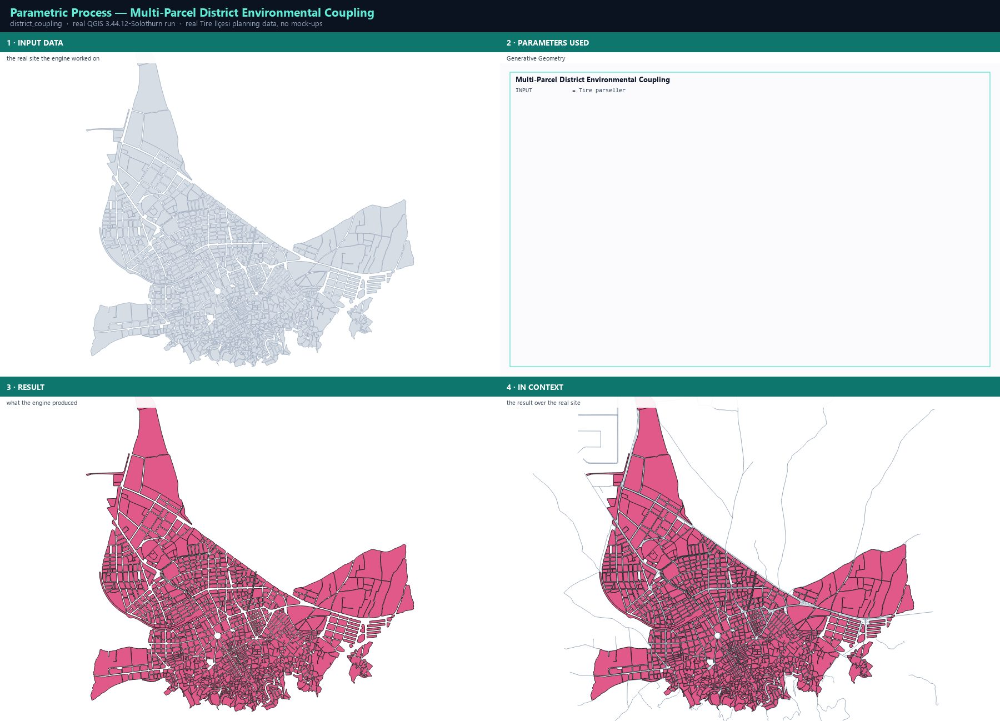
Multi-Parcel District Environmental Coupling
Read the output. The gap between the isolated and the coupled result is the finding. If a block scores well on its own but poorly once coupled, the problem is its relationship with the neighbours — usually a massing that closes a wind corridor or shadows a courtyard. No amount of tuning that block in isolation will fix it.
Parameters
Parameter
Description
Type
Default
INPUT
Input District Layer
Input layer
—
OUTPUT
Coupled District Layer
Output layer
—
Exact run used for the screenshots
INPUT = Tire parseller
When it goes wrong
The results are identical to the single-parcel run — the parcels do not touch, so there is nothing to couple; check the geometry.
Everything degrades at once — one oversized block is dominating the district; look for the outlier in the attributes.
The run is slow — coupling is quadratic in the number of interacting parcels; evaluate a neighbourhood-sized subset.
PPUD (Plot–Building–Urban Design) is the plugin's three-stage sequential engine. Stage 1 subdivides each block into plots with a chosen strategy. Stage 2 assigns a building genotype to every plot and optimises it against the zoning envelope. Stage 3 develops the fabric incrementally in randomised phases, recomputing mutual shadowing and canyon wind between phases — and with climate feedback on, later phases adapt their genotype to what the earlier ones already built.
Step by step
Open Processing Toolbox ▸ Parametric Process Studio ▸ 6. PPUD Sequential Pipeline.
Set INPUT to the block layer and choose BLOCK_TYPOLOGY: PerimeterBlock, LinearBlock, PavilionBlock, OrganicBlock or HybridBlock.
Choose STRATEGY: frontage for row-house plots, grid for orthogonal fabric, perimeter for courtyard blocks, organic for medieval irregularity, radial for Beaux-Arts composition, hybrid for perimeter edges with a grid interior.
Set the zoning envelope (MAX_BCR, MAX_FAR, MAX_HEIGHT) and INCREMENTAL_STEPS — the number of development phases.
Turn CLIMATE_FEEDBACK on: a plot developed in a later phase that would suffer more than 30 % shadow loss drops a floor and widens its setback; a canyon wind above 8 m/s switches the typology from Slab to SteppedTower.
Run. OUTPUT_PLOTS gives the subdivided plots with 14 performance metrics and a fabric_step field; OUTPUT_FBC gives the machine-readable form-based code (build-to-line, max floors, max height, setback).
The result
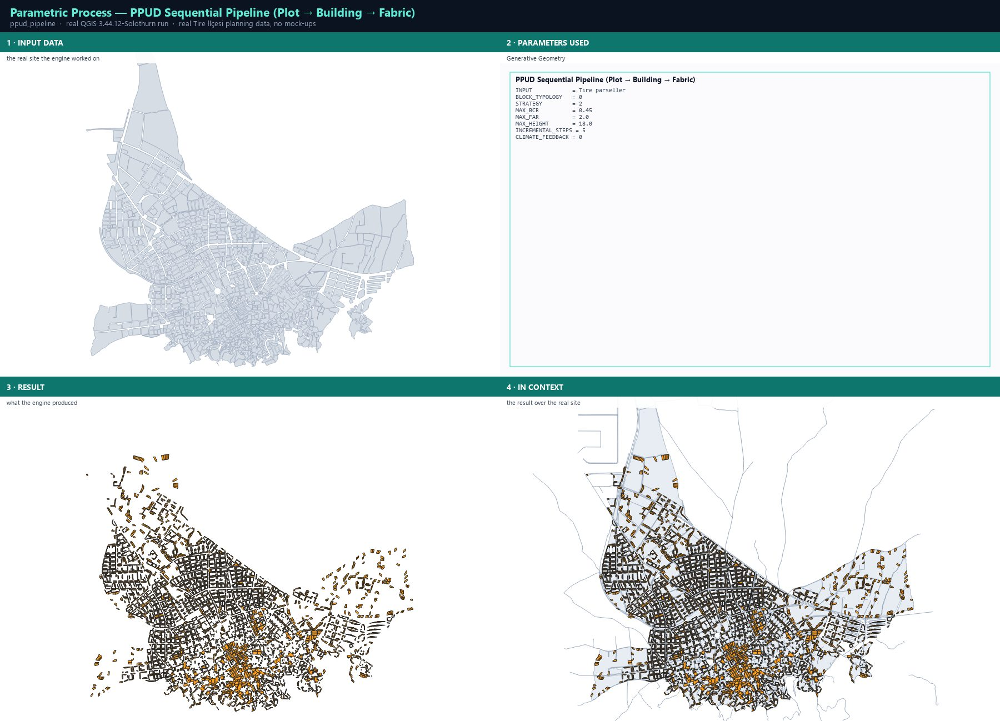
PPUD Sequential Pipeline (Plot → Building → Fabric)
Read the output. The fabric_step field is the point of the whole exercise. Colour the plots by fabric_step and you can see *when* each part of the neighbourhood was built — and therefore which building casts the shadow that made the next one shrink. That is a real planning argument, not a rendering curiosity.
The run aborts with a parcel-area error — a degenerate multi-part block; fix the geometry or take the largest part.
Every plot has the same genotype — the block typology's compatible building list is too narrow for the strategy; switch typology.
The fabric_step field is constant — INCREMENTAL_STEPS is 1; raise it to 5–10 to see the phasing.
Processing ID: parametric_process:ppud_pipeline
Research Protocol
Academic urban design study
Can I defend this design in a thesis, with the whole run reproducible?
The academic study is the plugin's research protocol: it builds a versioned study object from the site, the street network, the destinations and the green space, then runs the solver across several seeds and reports every alternative, every building, the open space, the rejected designs and a summary. The point is not a picture — it is an auditable record with a manifest.
Step by step
Open Processing Toolbox ▸ Parametric Process Studio ▸ 7. Academic Urban Design Study.
SITE: the prepared parcel layer. STREETS: the real street network. DESTINATIONS: schools, health and civic land. GREEN_SPACE: parks and planted areas. All four must share the site's CRS.
Set SEEDS to several values, e.g. 42,31415,271828 — a multi-seed run is what makes the result defensible, because it shows the answer is not a lucky draw.
Set the constraint envelope (MAX_BCR, MAX_FAR, MAX_HEIGHT), SETBACK, RAINFALL and CANOPY_TARGET.
Run. The outputs are ALTERNATIVES, BUILDINGS, OPEN_SPACE, REJECTED and SUMMARY — the rejected set is part of the evidence, not a failure.
Export the study JSON and its manifest, and read the access and robustness reports before you write a single sentence about the results.
The result
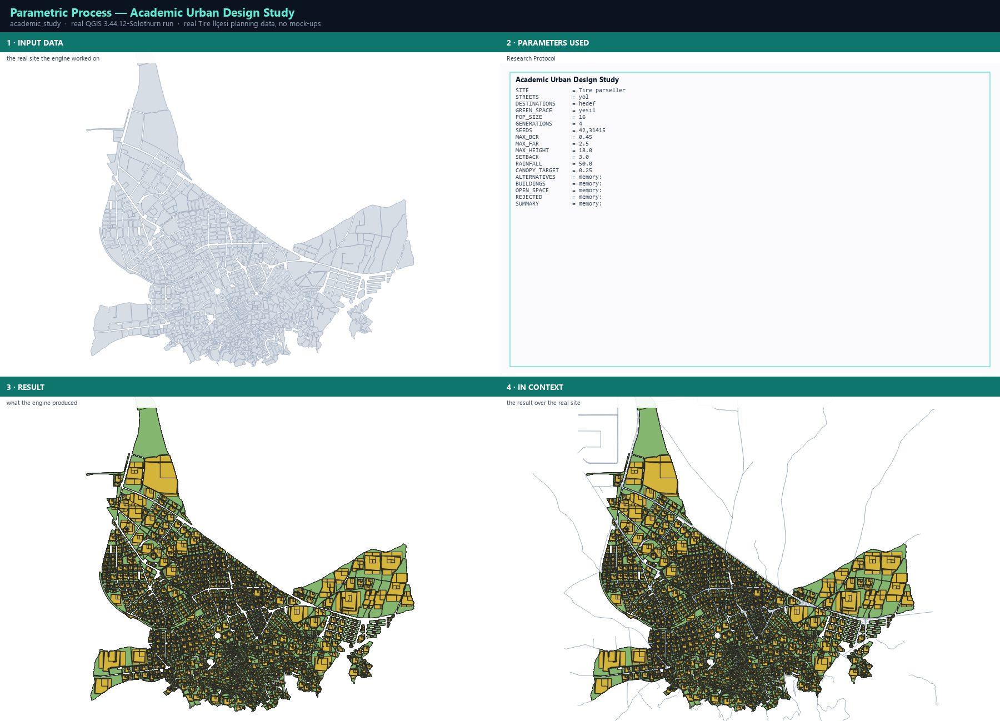
Academic Urban Design Study
Read the output. Three seeds are the minimum for a claim you intend to defend. If the rank-1 design changes completely between seeds, the site does not determine the answer and your text must say so. If it holds, you have a finding. The SUMMARY layer carries the per-parcel feasibility rate — read it together with the alternatives.
A layer is rejected because its CRS differs — the protocol refuses to compare across projections; reproject it to the site CRS.
Every design is rejected — the constraint envelope is stricter than the existing fabric; the study is telling you the site cannot be legally redeveloped as parameterised.
The run is very slow — multi-seed academic runs are expensive; reduce POP_SIZE for the pilot and raise it only for the final run.
What does my design actually look like on the ground?
The cockpit is a Three.js city model built from the parcel layer you launched it with. It draws the blocks, extrudes the current massing, keeps the street network visible, and lets you click any parcel to open its design controls: typology, use, roof style, setback, storey count and storey height, with scenario presets and a live score readout.
Step by step
Launch the cockpit from the dock with your parcel layer selected — the whole layer is exported to the local server and streamed into the scene.
Orbit with the left mouse button, pan with the right, zoom with the wheel. The HUD keeps the parcel count, the maximum Z and the frame rate visible.
Click a block. The inspector opens with the parcel's area, the scenario presets and the design sliders.
Choose a Building Typology (Courtyard, Slab, Tower, PodiumTower, SteppedTower, MultiBuildingBlock), a Primary Use and a Roof Style, then set Setback Distance, Floor Count and Floor Height.
Watch the live score bar at the bottom: PlanX Score, Compliant share, Total GFA, Population and Carbon all recompute as you move the sliders.
Press Sync Parameters to QGIS to write the reviewed design back into the layer, or Export Planning Report (CSV) for a table.
The result
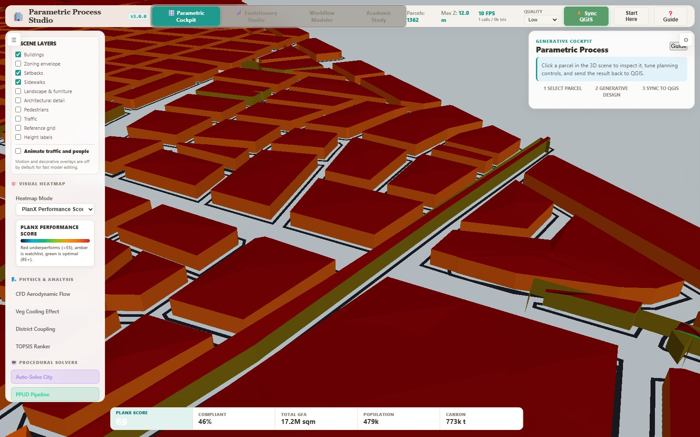
3D cockpit — the real Tire city model
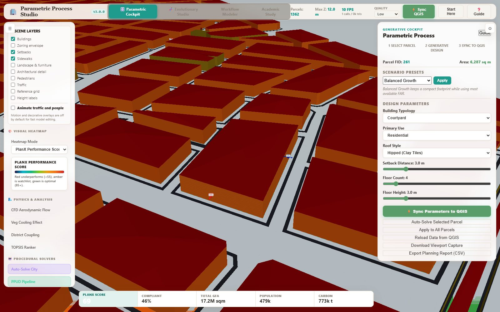
Parcel inspector — design parameters for one block
Read the output. The bottom bar is the decision instrument. A design that raises GFA while its PlanX Score falls is buying floor area with comfort. The Compliant share tells you how much of the fabric still satisfies the zoning envelope after your edit. Change one parcel, watch both, and the trade-off becomes visible in seconds instead of in a report.
When it goes wrong
The scene shows a demo city — the server could not read the layer; reload the data from QGIS in the cockpit.
The model is tiny or collapsed — the layer was exported in degrees; the dock reprojects geographic layers, but a hand-made GeoJSON must be projected.
The frame rate is low — lower the Quality selector to Low and switch off decorative layers.
The browser studio
Evolutionary Studio & the Pareto Analytics Studio
How do I read a Pareto front instead of just looking at it?
The Evolutionary Studio is where the multi-objective solver runs: you choose the objectives and whether each is maximised or minimised, pick the algorithm, set population, generations, crossover and mutation, define the gene bounds, and optionally enable the AI surrogate model. When it finishes, the Pareto Analytics Studio opens with six views of the same solution set.
Step by step
Open the Evolutionary Studio and tick the objectives you care about: GFA, PlanX Score, Wind Vent, Solar Radiation, Air Dispersion, Sky View (SVF). Each has a MAX/MIN switch — decide what 'better' means before you run.
Choose the algorithm, population size and generations, and set the gene bounds (floors, setback) to the range your zoning allows.
Press Run Evolutionary Optimization. The progress bar tracks the generation.
In the Pareto Analytics Studio, read the scatter plot first: X and Y are any two objectives, the colour mode can be Pareto Rank, K-Means cluster or generation trajectory.
Use the parallel coordinates plot to brush-filter the set across all objectives at once — this is how you find the narrow, defensible region of the front.
Read the fitness convergence chart to check that the run actually converged, the radar chart for one solution's profile, the cluster view for how many distinct families of solutions exist, and the population table for the ranked list you will present.
The result
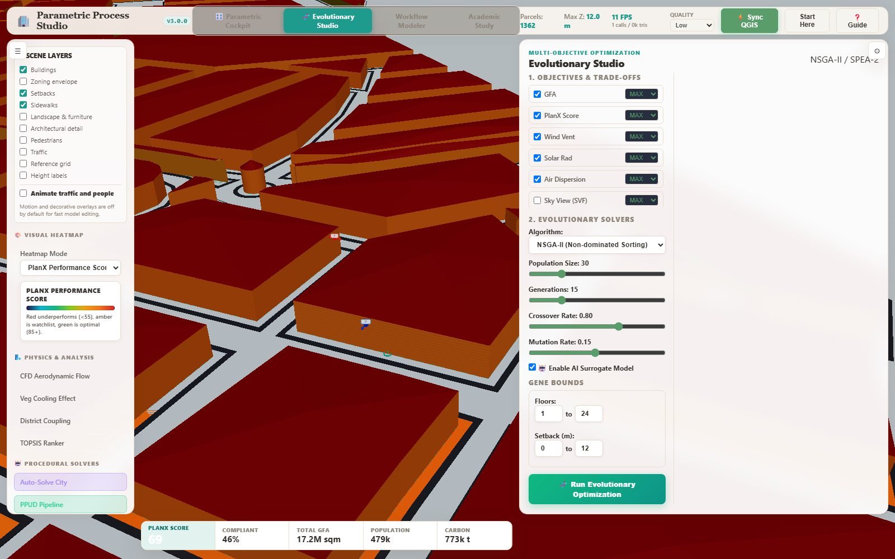
Evolutionary Studio — objectives and solver controls
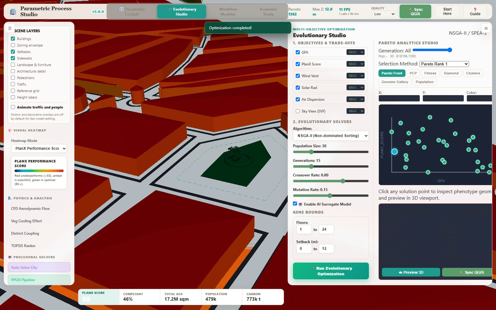
Pareto Analytics Studio
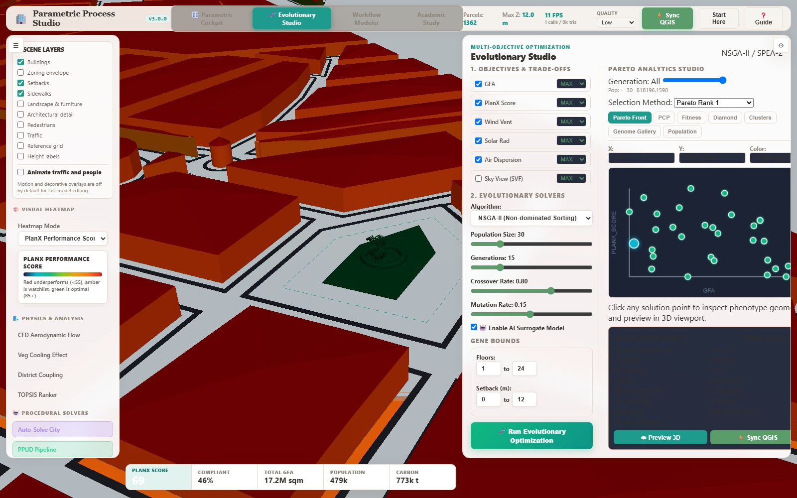
Pareto front scatter
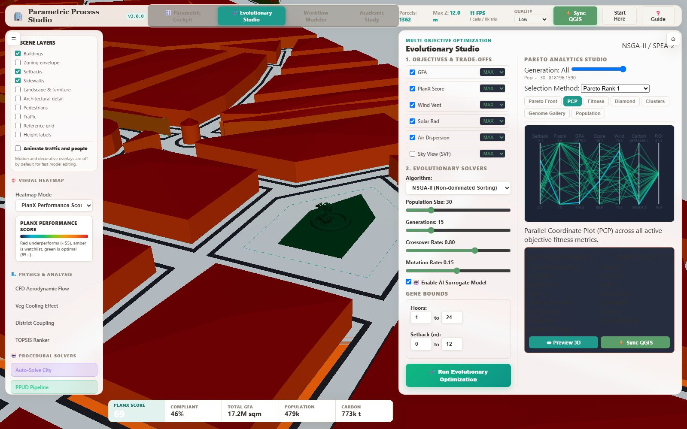
Parallel coordinates plot
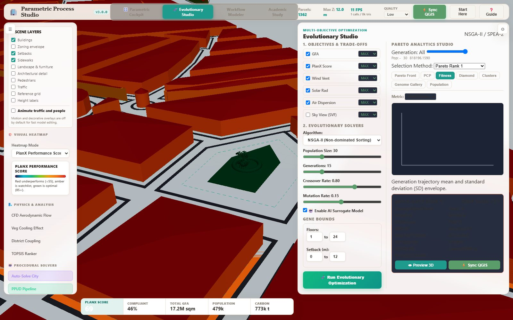
Fitness convergence and standard-deviation band
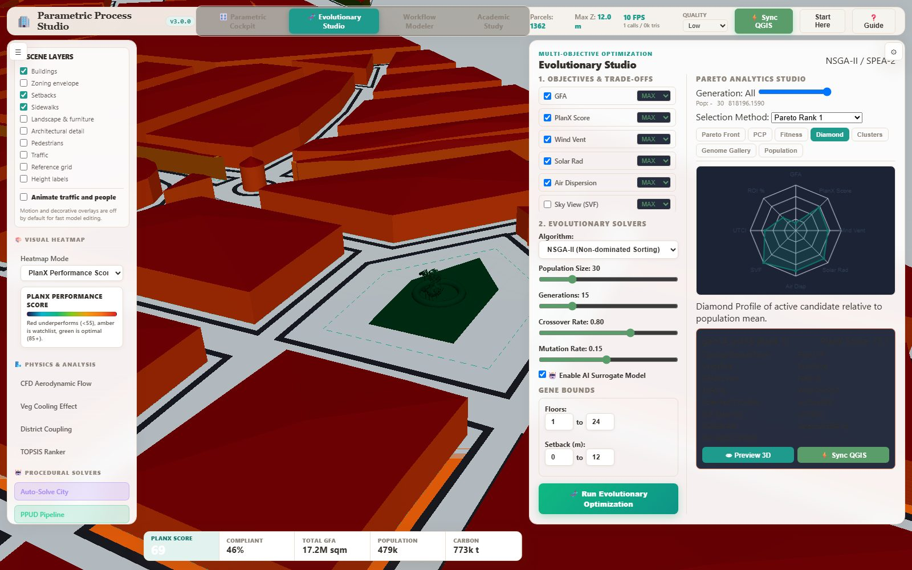
Diamond / radar fitness profile
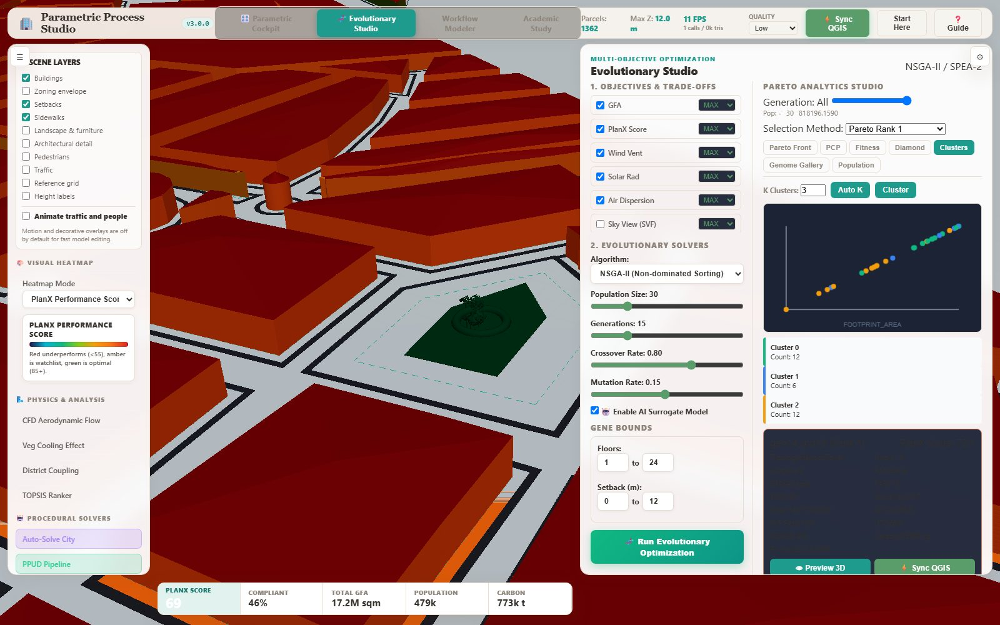
K-Means clustering of the solution set
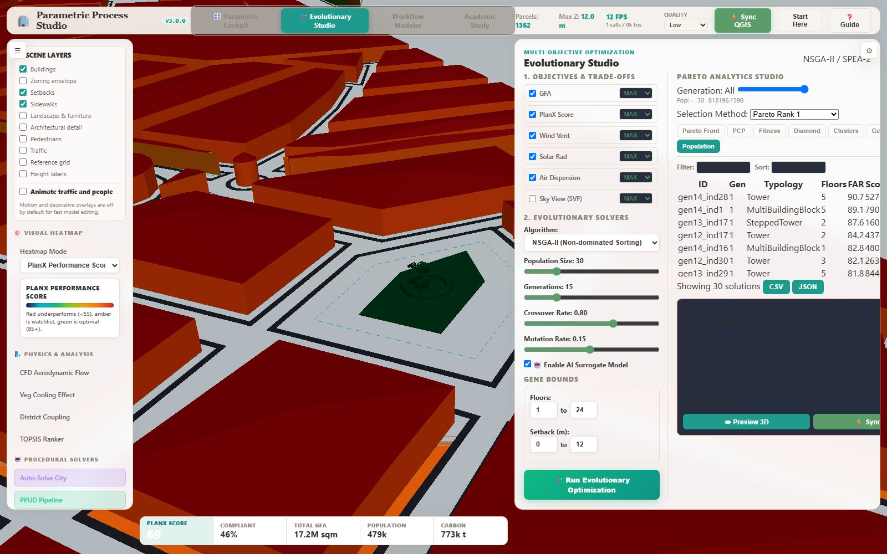
Population browser
Read the output. The scatter is the frontier; the parallel coordinates plot is the explanation. A wide cloud means the objectives trade off freely and you must choose. A narrow band means one solution dominates and the search was easy. The convergence chart is your honesty check: if the spread band is still shrinking at the last generation, the run was too short and the front is not final.
When it goes wrong
The run finishes but the studio stays empty — the analytics container only opens when a run completes; check the progress text.
Every point has the same colour — the colour mode is 'Pareto Rank' and everything is rank 1; switch to K-Means or generation trajectory.
The brush filter selects nothing — the axes are in different units; use the axis selectors to pick comparable metrics.
The browser studio
Visual rule workflow modeler
Can I chain the engines into a repeatable design procedure?
The workflow modeler is a Grasshopper-style node canvas. A workflow chains site input, zoning, shape grammar, PPUD, the evolutionary solvers, the district physics, TOPSIS ranking, selection and QGIS output into one executable graph. Templates ship for balanced growth, feasibility-first, low-carbon, climate-responsive, PPUD and district scenarios.
Step by step
Open the Workflow Modeler from the dock or the top navigation.
Pick a template from the selector and press the new-workflow button, or add nodes one at a time and connect them by dragging.
Run the graph. The run log reports each component and the final status.
Inspect a node to see its parameters and edit them; the inspector shows the component description and its fields.
Use Preview Result to inspect the produced phenotype, Sync Result to push it back to QGIS, and Export / Import to move a workflow as portable JSON.
Read the output. A workflow is a *procedure*, not a picture. The same graph run on a different site gives a comparable answer, and the JSON export is what makes the procedure reviewable: a colleague can open the file, see the zoning parameters, the solver settings and the ranking rule, and re-run it. That is the difference between a design study and a reproducible method.
When it goes wrong
A run fails at a node — open the run log; the failing component and its message are written there.
The graph is empty after loading a template — the template must be applied with the new-workflow button, not just selected.
The preview is empty — the graph has no QGIS output node, so there is nothing to preview.
The browser studio
Academic study workspace
How do I set up, run and export a reproducible study?
The Academic Study workspace is the browser half of the research protocol. It creates a versioned study record with its schema badge, sets the CRS, the seeds and the constraint envelope, runs the study, and exports a signed study JSON that carries the study id, the seeds, the assumptions and the provenance of every input.
Step by step
Open the Academic Study workspace.
Name the study and set its CRS to the site CRS.
Enter the seeds as a comma-separated list, then the constraint envelope: BCR, FAR and height, plus the rainfall event and the canopy target.
Create the study and read the result: the study id and the schema version appear in the panel.
Export the study JSON. The file name carries the study id, and the record is what an auditor reads.
The result
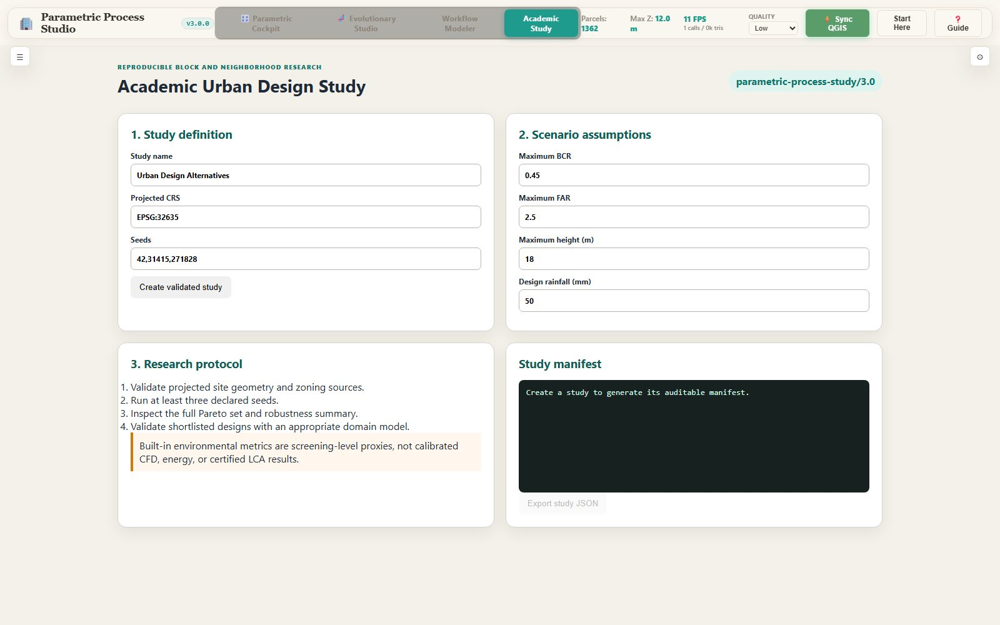
Academic study workspace
Read the output. The exported JSON is the artefact. It names the study, its schema version, the seeds and the assumptions, so a reader can tell exactly which protocol produced a number — and can tell if a later version changed the rules. Keep it with the figures; a study without its record is an anecdote.
When it goes wrong
The export button stays disabled — no study has been created yet.
The schema badge shows an unexpected version — the plugin was updated since the study was created; create a new study rather than editing an old one.
The study will not run — check the seeds: they must be a comma-separated list of integers.